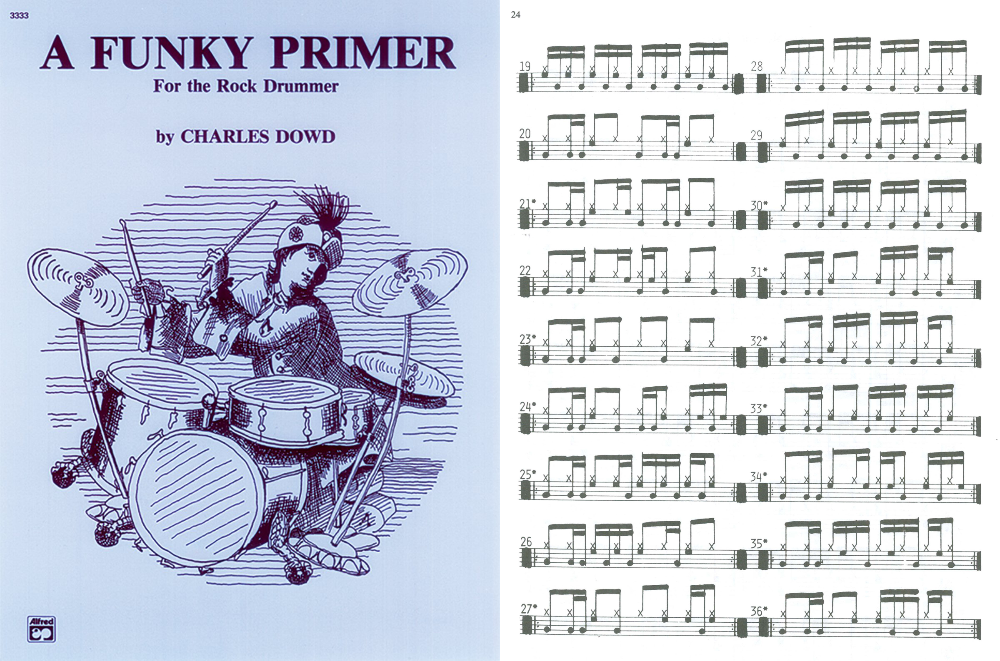
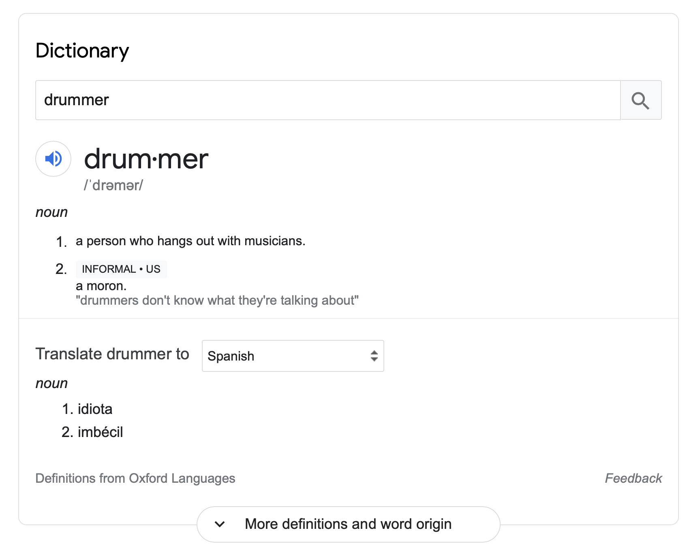
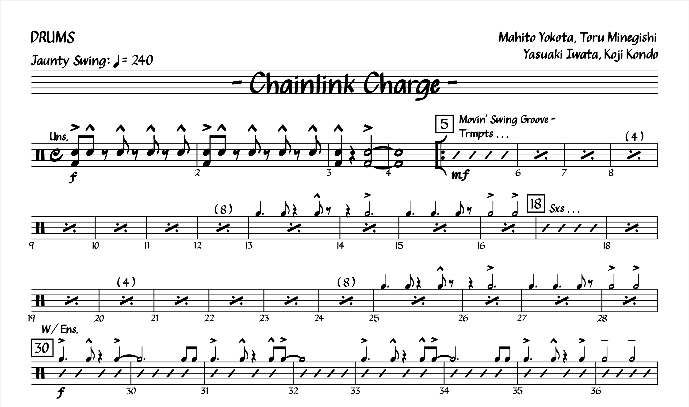
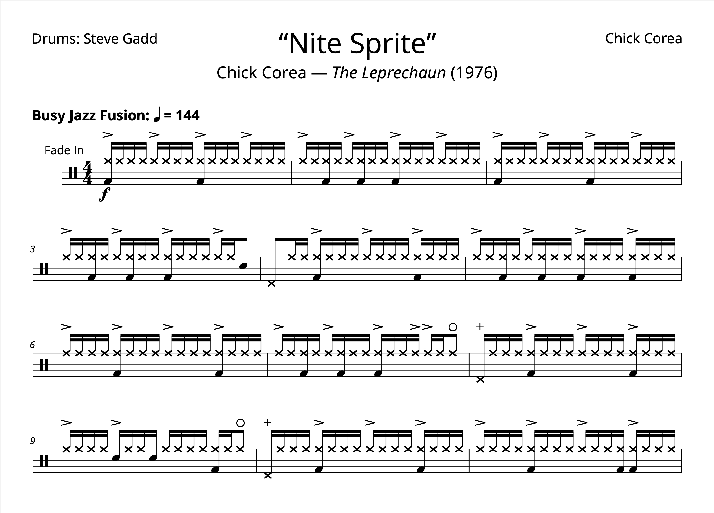
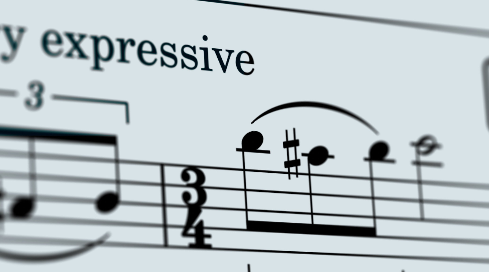
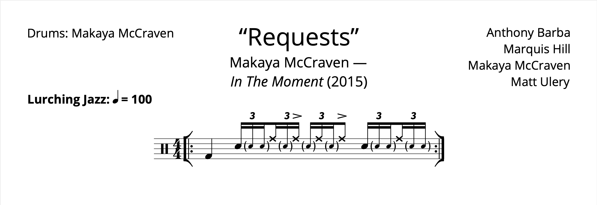
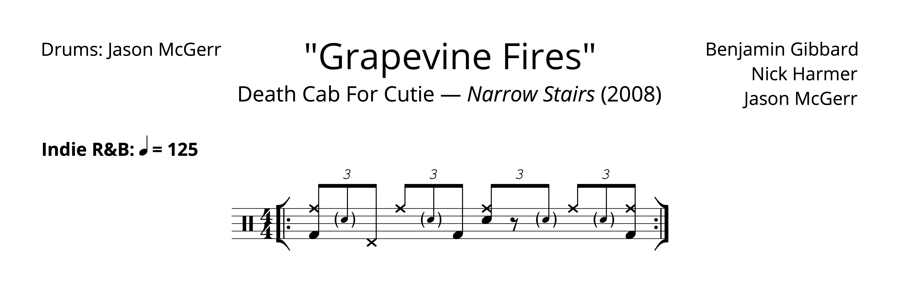
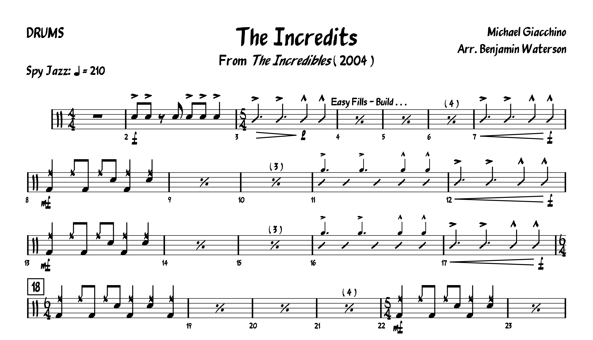

Blog
Review: Advanced Funk Studies by Rick Lantham
Posted on April 25, 2021

I don’t really have a schedule for doing reviews and I don’t want to burn through them, but I really enjoyed writing about A Funky Primer, so let’s have another one. I said I would review these books more or less in the order I went through them, but after A Funky Primer I want to jump ahead a bit to another funk book called Advanced Funk Studies, written by Rick Lantham and published in 1980. I think this was the ~4th book I went through. Read More . . .
Response: Rick Beato’s “TOP 20 DRUM INTROS OF ALL TIME”
Posted on April 18, 2021
I still want to add some more variety to the site — I don’t want the blog to be an endless stream of sheet music. I also have a good collection of projects that I don’t want to blow through, since they take a bit of time to whip up.
So today I’m going to respond to a video published back in August of 2019: “TOP 20 DRUM INTROS OF ALL TIME”. The video was made by Rick Beato, a music YouTuber who spent most of his life as a producer, and now talks about engineering and theory. I’m a little late with this, but… why not? Read More . . .
Transcription: “Salt of the Earth” — Alex Rüdinger with Good Tiger
Posted on April 11, 2021

Alrighty, time for something a bit more interesting. I found this band about three years ago, when Apple Music recommended them to me. They had just released an album, and this track “Salt of the Earth” was chosen for a new music playlist. It caught my attention right away when it came on. While the band wasn’t familiar, I recognized the drummer Alex Rüdinger after I looked into the group. Alex has played music with a whole slew of bands, most of it being rather intense metal. Not usually my cup of tea, so I wasn’t very familiar with Alex’s playing at this point. Read More . . .
Transcription: “Rock and Roll” — John Bonham with Led Zeppelin
Posted on April 4, 2021

Another sleepy post this week: I don’t have much to add about this tune, I just wanted to get my interpretation down on paper, since (surprisingly) there aren’t many transcriptions of this solo out there. Read More . . .
Review: A Funky Primer by Charles Dowd
Posted on March 28, 2021
It was a bit challenging to work on anything especially ambitious this week: I’ve been hard at work finishing up my band’s new website, and we have just one or two more things to take care of for our EP which has been keeping me busy as well. Add to that a bunch of work I’m doing on this site to make it easier to read on mobile. Oh, and then there’s that whole business of somebody shooting up the grocery store I used to go to up until barely a year ago. I guess you could say that’s been messing with my productivity. Read More . . .
This Week in Boulder
Posted on March 24, 2021

So Monday night I was getting ready to watch CU play Florida State in the round of 32, when my excitement was derailed by news of a shooting that happened hours earlier in Boulder. Some jerkoff went to a King Soopers and killed ten people (including a police officer) before being arrested and hauled off to a hospital.
It’s a bit chilling for me, since I used to go to that store all the time. Read More . . .
Transcription: “Jazz Crimes” — Tommy Igoe with The Tommy Igoe Groove Conspiracy
Posted on March 21, 2021

Oh, Tommy Igoe… you probably have one of two opinions of him. For many, Igoe is the mastermind behind Groove Essentials and Great Hands for a Lifetime, which are adored pieces of eduction for many drummers. I’ve spent quite some time with both, and they’re no doubt ambitious and well done projects.
On the other hand, you might have a very different opinion of Tommy if you’ve ever browsed his socials, especially his Instagram page. In fact, I often see threads on Reddit from drummers talking about Tommy’s behavior on the internet. Read More . . .
Transcription: “F.C.P.S.I.T.S.G.E.P.G.E.P.G.E.P.” — Andrew Forsman with The Fall of Troy
Posted on March 14, 2021

Depending on how old you are, you may look at the name of this song and thing what the hell kind of band is this? Well, many folks in my generation (and thereabouts) were first introduced to The Fall of Troy via good old Guitar Hero:
I’ll be shocked if you watch more than 30 seconds of that. Read More . . .
Transcription: “Hey Joe” — Mitch Mitchell with Jimi Hendrix
Posted on March 7, 2021

Yeah, I should probably know better than to talk about “Hey Joe” in the 21st century. But there’s no denying that it’s an incredible song, despite the rather… disturbing lyrics.
There’s actually some interesting speculation online as to why Jimi decided to make his debut single a cover song about a man who murders his wife and tries to hightail it to Mexico. Discussions usually reference Jimi’s turbulent military service (e.g. being conscripted into the Army and basically kicked out of it) as possibly drawing him to a song about violence, betrayal, and freedom. I’ve even found comments about how the background vocals are meant to represent the ghost of Joe’s wife, haunting over him as he tries to cheat the gallows. Read More . . .
“Advanced” Music Theory (For Drummers)
Posted on February 29, 2021
In my Unpopular Opinions post, I brought up my frustration with drummers throwing around “advanced” music theory terms to look cool, without really investigating these terms mean. I said in that post that there was a chance I would write about this in the future, and here we are. I have four topics to discuss: syncopation, polyrhythm, polymeter, and metric modulation. I want to share my understanding of what these terms mean, and I’ll try to address what seems to be the omnipresent confusion regarding them. Read More . . .
Chart: “Chainlink Charge” by Mahito Yokota, Toru Minegishi, Yasuaki Iwata, & Koji Kondo + Practice Loop
Posted on February 21, 2021
This project has a bit of a story behind it.
Todd Bishop over at Cruise Ship Drummer is a big fan of practice loops, which he usually makes himself and shares on YouTube. See what they’re all about on his website.
Meanwhile, about seven(!) years ago I was playing Super Mario 3D World for the first time, and I remember really digging the soundtrack, especially for levels like “Chainlink Charge”. Read More . . .
Transcription: “Nite Sprite” — Steve Gadd with Chick Corea
Posted on February 14, 2021
I wasn’t planning on sharing this until the spring or summer… but I’ve decided now is as good of a time as any, with the news of Chick Corea’s recent passing from cancer at the age of 79.
Corea was obviously a talented pianist, but he was one heck of a composer — much like Frank Zappa, musicians could come from all over and show off by navigating Corea’s complicated arrangements. He also had a deep relationship with many drumming heroes, like today’s subject Steve Gadd, or perhaps Dave Weckl; The Elektric Band helped to firmly establish Weckl as a fusion legend. But anyway, let’s get on with the post. Read More . . .
Unpopular Opinions
Posted on February 7, 2021

So, a few weeks ago, someone on r/drums started a thread basically asking about unpopular drum opinions. I couldn’t help myself, and I left quite a lengthy comment, since I find myself disagreeing with most of what happens on the internet with regards to drumming.
My comment ended up being at the top of the thread, becoming the most popular thing I’ve ever done on the site, with a whopping 29 upvotes. Read More . . .
Transcription: “Hipsterminate” — Richard Kass with Thunkfish
Posted on January 31, 2021

There are deep cuts… and then there’s this. I told you I would be back with something interesting!
Over at r/drumming (a subreddit that’s basically the cooler relative of r/drums) someone asked for help in making sense of a drum solo in the tune “Hipsteriminate” by a band called Thunkfish. Read More . . .
Know Your Tempos — Led Zeppelin
Posted on January 24, 2021

If you’re like me and you’ve ever made the mistake of watching Whiplash, you probably sent your palm through your forehead at the bit where Fletcher points to a metronome marking and tells Andrew to “count me a 215” before he starts going on about “I am to understand that you cannot read tempo?!”. He also calls Andrew a retard, because edgy movie is edgy. If only I knew that the film was just getting started… (more thoughts on that here).
Well, despite the fact that “read tempo” is a phrase that I’ve never heard a real musician use, you can indeed develop a skill like this. Read More . . .
MuseScore 3.6 Released
Posted on January 20, 2021
I wanted to make a short post discussing my notation software of choice, MuseScore, since a somewhat significant update just came out at the end of last week. The MuseScore team calls it an “engraving” release, adding some neat features such as default indenting on scores (which I previously always did with a spacer), in addition to a feature that will organize instruments on a conductor score (using templates such as “Orchestra” or “Jazz Band”). Perhaps most significantly, a new music font was added, “Leland”. Read More . . .
Transcription: “Feeling This” — Travis Barker with Blink-182
Posted on Febuary 17, 2021

Yeah yeah, this song’s been done dozens of times, but I took a shot at it a few years ago and I figured I’d share it. “Feeling This” is often considered a modern day drumming classic — it’s not hard to see why. “Feeling This” is one of the best songs Blink-182 ever did; just listen to the ending vocals in isolation to see the band’s Studio MagicTM at work. Read More . . .
Groove: “Requests” — Makaya McCraven
Posted on January 10, 2021
In the weeks before the 2020 election, I kept seeing these rather hip and sleek ads for the The New York Times. You may know what I’m talking about, have a watch for yourself:
It certainly gets your attention, especially with that music. Read More . . .
Transcription: “The New Year” — Jason McGerr with Death Cab For Cutie
Posted on January 3, 2021

I know we just looked at Jason McGerr back in November, but when else am I gonna share a song called “The New Year”? So then, I have some more Jason McGerr groovage for you. The tune is off of Death Cab for Cutie’s masterpiece Transatlaticism, an album so good even Pitchfork realized they had fucked up when they revisited the LP ten years later, bumping their original score from a 6.4 to an 8.4. Read More . . .
Wrapping Up 2020
Posted on January 1, 2021

Now that the new year is upon us, it’s time to wrap up the last 12 godforsaken months. I can’t say I have very high hopes for 2021, but in the meantime, I guess I should take some inventory.
For one, I graduated college this past May. At long last, I officially have one major, two minors, and a certificate to my name. It was a bummer I didn’t any sort of commencement (not like I really cared), but hey, now I have a diploma. Read More . . .
Transcription: “How Many More Times” — John Bonham with Led Zeppelin
Posted on December 27, 2020

Happy Holidays everyone! This week, I decided to share something I started a while back and have spent some time polishing up: fills and solos from “How Many More Times” off of Led Zeppelin’s debut album, with John Bonham on drums.
I think it’s appropriate to close out my first year on the site with this tune. The project was actually the first “big time” transcription of a song I ever attempted, starting way back in the summer of 2014. Read More . . .
Rant: Thoughts on Buddy Rich
Posted on December 20, 2020

When I took my deep dive into the ’89 Buddy Rich Memorial Concert, I had to watch most of it on YouTube before I got my hands on my own copy (which is much too difficult — shame on you Alfred!). Of course, I often wandered into the comments section on these videos, and amongst all the praise for these great drummers I started noticing comments that were… a little dismissive. Read More . . .
Movie Review: Sound of Metal
Posted on December 16, 2020
Whaaa—two posts in one week?! Yeah, I figured I’d slip another post in this week, because I want to quickly share my thoughts on a film I recently watched, Sound of Metal, starring Riz Ahmed as a heavy metal drummer.
I have to be weary of movies that are about drummers. One the one hand, you have something like Drumline, a flick that’s pretty silly but mostly watchable. Then you also have that other movie about the jazz drummer — the one I try (and fail) to pretend doesn’t exist. However, Sound of Metal has a premise more intriguing than any of those other films. Read More . . .
Rant: Drum Solos
Posted on December 13, 2020

So it’s time to distill my thoughts from the Memorial Concert posts. The first thing I want to talk about concerns drum solos, since I originally wanted to share a solo from each drummer. I had to can an audible partway through this project, when I realized that notating six solos was not gonna happen. Read More . . .
Transcription: “Wind Machine” — Louie Bellson with The Buddy Rich Big Band
Posted on December 6, 2020

At long last! It’s finally time to wrap up the Buddy Rich Memorial Concert posts. Louie Bellson takes us home with the tune “Wind Machine”, from the first half. I kind of went about these in a weird order — Steve Gadd and Gregg Bisonette were the first drummers I had worked on, so I ended up just alternating from the first and second halves. I guess it’s appropriate to call it a day with the oldest drummer who was there. Read More . . .
Transcription: “Mercy, Mercy, Mercy” — Dave Weckl with The Buddy Rich Big Band
Posted on November 29, 2020

This week, Dave Weckl will bring us the penultimate entry for these Memorial Concert posts. I must say, these posts have sure kept me busy. I feared I bit off a little more than I could chew when I got to Vinnie’s post, but now the end is in sight. Thank goodness I had some anniversaries halfway through to keep me from getting burned out. Read More . . .
Transcription: “Dancing Men” — Dennis Chambers with The Buddy Rich Big Band
Posted on November 22, 2020

Alright, it’s time to jump back into the Buddy Rich memorial concert — sorry for the brief hiatus. We’re gonna pick it back up with Dennis Chambers on the tune “Dancing Men”, played from the first half of the concert.
On my Vinnie post, I talked about how the drummers from that night all had slightly different interpretations of how fast to play the charts. Read More . . .
Drum Groove: “Grapevine Fires” — Jason McGerr with Death Cab For Cutie
Posted on November 15, 2020
I haven’t done a “groove of the day/week/month” kind of post on my site yet, but I have something in that vein for you today. While I don’t really know how often I’ll do these, I want to get this particular groove clear for everyone: “Grapevine Fires” by Death Cab For Cutie, off of Narrow Stairs with Jason McGerr on drums. Read More . . .
Transcription: “115” — Kevin Sherwood
Posted on November 8, 2020

So here’s something I have no business doing, but humor me for a moment:
One of my favorite games growing up was Call of Duty: Black Ops. Yeah yeah, I know… cringe all you want, but there’s no denying how much fun I had playing it. And now, Black Ops will turn ten years old tomorrow. Read More . . .
Chart: “The Incredits” by Michael Giacchino
Posted on November 1, 2020
We need to take a break from the Buddy Rich Memorial Concert, because I have a special treat this week.
When The Incredibles 2 came out ~2 years ago, I gave the original a watch to get ready, and I totally forgot what a killer soundtrack the film has (courtesy of Michael Giacchino). It’s that reason alone that The Incredibles is probably my favorite Pixar film, although I doubt I fully appreciated the score when I was younger. As a fun piece of trivia, this was actually Giacchino’s first Pixar collaboration. And what an effort. Read More . . .
Transcription: “Ya Gotta Try” — Vinnie Colaiuta with The Buddy Rich Big Band
Posted on October 25, 2020

It’s time for Buddy Rich part 3: today, we’re jumping back to the second half of the concert with Vinnie Colaiuta on the tune “Ya Gotta Try”. “Ya Gotta Try” was one of Buddy’s favorites, and it was one of the more exhilarating charts played that night (along with “Time Check”). Read More . . .
Transcription: “Time Check” — Gregg Bisonette with The Buddy Rich Big Band
Posted on October 18, 2020

This is part 2 of my posts concerning the 1989 Buddy Rich Memorial Scholarship concert. Today, we’re looking at Gregg Bisonette’s playing from “Time Check”. Gregg did a fantastic job that night; his playing on “In A Mellow Tone” swings harder than almost anything else from the show, and he goes very hard on this chart. Read More . . .
Transcription: “Keep The Customer Satisfied” — Steve Gadd with The Buddy Rich Big Band
Posted on October 11, 2020

This will be the first in a series of posts concerning the 1989 Buddy Rich Memorial Scholarship Concert, filmed in Los Angeles at the Wiltern Theatre. It’s a night that I consider to be one of the greatest moments in drumming history. Shamefully, it’s difficult to get a personal copy of the show; DVD’s haven’t been made since a limited run in 2006 (and as such are obnoxiously expensive), while only snippets are available on YouTube. Read More . . .
Transcription: “Story” — Brian Evans with Chon + A rant about music theory
Posted on October 4, 2020

This has been kicking around in my drafts folder for almost exactly one year — I guess now is as good of a time as any to share it with the world. So, last October I saw a post over on r/Drums where somebody asked about the Chon track “Story” off of their 2015 debut. The poster was asking about what was going on at the end of the tune, around the 3:10 mark. Read More . . .
Transcription: “Separate Ways (Worlds Apart)” — Steve Smith with Journey
Posted on October 4, 2020

Another low-key post for this week — I need to take it easy after ”Eary Summer“! But in all seriousness, I do realize that I've looked a lot of intense stuff so far, so let’s calm down with some Steve Smith. Read More . . .
Transcription: “Early Summer” — Yoshinori Ryo with Ryo Fukui
Posted on September 20, 2020

Listen to the first 40 seconds of this:
What you’re hearing is a guy named Ryo Fukui (福居良). He began his life in music by playing the accordion (like all of us), and then at the age of 22 decided he wanted to be a jazz pianist. And after 6 years of self-taught instruction, he cut his first album, Scenery. Read More . . .
Transcription: “Rosanna” — Jeff Porcaro with Toto
Posted on September 6, 2020
A simple post for this week: I want to take a unique look at a classic drumming song, “Rosanna” by Toto, off of Toto IV with Jeff Porcaro on drums. If there’s one part of this song all drummers know about, it’s the shuffle, but that topic’s been done to death. Instead, I want to look at a severely underrated part of the drum performance, and that’s the fills.
Porcaro plays some awesome fills throughout the track, even if they are overshadowed by the main groove. Read More ...
Transcription: “Behind Blue Eyes” — Keith Moon with The Who
Posted on August 30, 2020

It’s finally time for some Keith Moon, the man who got me into drumming. I think Live at Leeds is one of the most important albums for any drummer to listen to, myself especially. I expect that one of these days I’ll take a look at the record; I’m even tempted to do a full note-for-note transcription of it…
But today I have “Behind Blue Eyes”, off of Who’s Next. Read More . . .
Transcription: “The Price” — David Garibaldi with Tower of Power
Posted on August 23, 2020

About four years ago, David Garibaldi released a collection of sheet music, transcriptions he made himself to show off his playing with Tower of Power. I really like it when drummers take a look at their own playing, it’s the best look you’ll probably get at their work. I have the book myself, and it’s a great look at some very busy, dense/harmonic funk drumming. Garibaldi has some nutty drum parts. Read More . . .
Transcription: “Odessa” — Navene Koperweis with Animals as Leaders
Posted on August 16, 2020

Today we’re looking at some Animals as Leaders.
I’m analyzing a bit of a deep cut, from their oft-forgotten second album Weightless (2011). I wasn’t tuned into Animals as Leaders when it came out, and while I suspect it got the attention it deserves when it was first released, it seems to be overlooked now. Read More . . .
Transcription: “Aja” — Steve Gadd with Steely Dan
Posted on August 9, 2020

This week, I’m sharing my interpretation of a drumming classic: “Aja” by Steely Dan, with Steve Gadd on drums. I couldn’t gush over this whole record enough, like many drummers and musicians have. But in all seriousness, Aja is one of the most important albums for me as a drummer, and Steve’s solo is one of those moments that totally changes the way you look at the instrument. Read More . . .
Transcription: “Little Wing” — Mitch Mitchell with Jimi Hendrix
Posted on August 2, 2020

Coming at you this week with a full song transcription: “Little Wing” by Jimi Hendrix.
I really got into Hendrix during the spring semester of my senior year in high school, and as I dove into Mitch’s playing, I poked around online for some drum sheet music. This was back when I assumed the average drummer on the internet knew what they were doing when it came to transcribing (or really when it came to anything). Read More . . .
Transcription: “Good Times Bad Times” — John Bonham with Led Zeppelin
Posted on July 26, 2020

Welcome to the blog! I have a lot of things to share on my site, and I’ll kick things off with sheet music for the classic “Good Times Bad Times”. Most of the really famous licks are pretty well known, but since it’s such a revered tune I took a detailed look. I don’t have a lot of full-length transcriptions, but with songs like this that are under 3 minutes, it’s not too difficult. Read More . . .